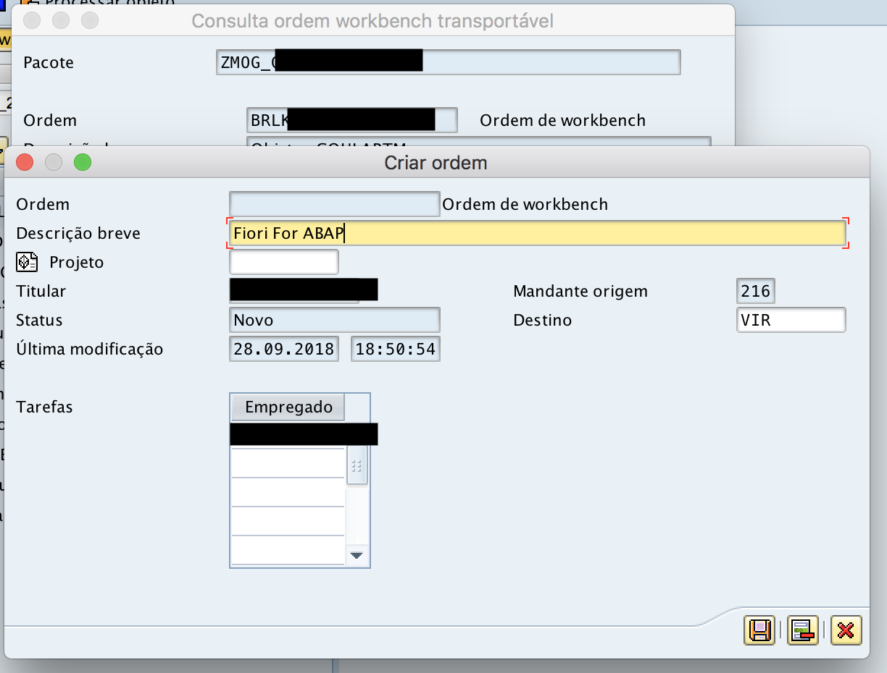

Criar novo projeto no Gateway
Contexto
Nesse primeiro exercício, o objetivo será criar um novo projeto no Gateway, para que nos próximos exercícios, possamos utilizar o projeto para criar nos serviços OData, implementando a lógica que quisermos de seleção de dados (rotinas de backe-end).
Pacote de desenvolvimento
O primeiro passo, é criar um novo pacote de desenvolvimento, para assim poder agrupar os seus desenvolvimentos nesse pacote específico.
O pacote pode ser criado pelo Eclipse, ou pela SE80 do SAP GUI. O padrão de nomenclatura do pacote deve ser ZMOG_USERNAME, sendo USERNAME o nome do seu usuário de login.
Salve o pacote em uma nova request atríbuida ao seu usuário.

Novo Projeto no Gateway
Acesse a transação SEGW e crie um novo projeto, gravando o mesmo no pacote criado no passo acima. Utilize a nomenclatura ZGW_MOG_USERNAME_01, sendo USERNAME o nome do seu usuário.